CODING AGENTS AS PIXEL WORLD MODELS
traex/DeepSeek-V4.1-Flash · 0026
点击播放 · 原生 RGB 像素
逐轮保存的候选
回放视频、检查图与代码变化。
每份候选均可单独播放。实际图片检查记录在下方工具轨迹中。
候选 01播放与检查图
点击播放 · 原生 RGB 像素

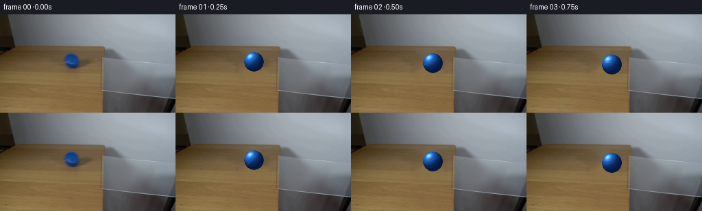
展开代码变化
--- 上一保存版本
+++ 本次保存版本
@@ -0,0 +1,182 @@
+from pathlib import Path
+
+import cv2
+import numpy as np
+from PIL import Image, ImageFilter
+
+from artifact_io import save
+
+
+CASE_DIR = Path(__file__).resolve().parent
+WIDTH, HEIGHT = 256, 144
+FRAMES, FPS = 20, 4
+
+
+def clean_plate(source):
+ """Remove the initial ball and its soft shadow from the locked background."""
+ image = source.copy()
+ mask = np.zeros((HEIGHT, WIDTH), np.uint8)
+ cv2.ellipse(mask, (109, 68), (18, 18), 0, 0, 360, 255, -1)
+ cv2.ellipse(mask, (116, 79), (24, 11), -8, 0, 360, 255, -1)
+ mask = cv2.dilate(mask, np.ones((3, 3), np.uint8), iterations=1)
+ cleaned = cv2.inpaint(image, mask, 5, cv2.INPAINT_TELEA)
+
+ # Reintroduce a little of the tabletop's horizontal grain across the patch.
+ y0, y1, x0, x1 = 50, 92, 87, 141
+ patch = cleaned[y0:y1, x0:x1].astype(np.float32)
+ for y in range(y0, y1):
+ if y % 5 in (0, 1):
+ strip = cleaned[max(0, y - 8):y, x0:x1].mean(axis=0)
+ patch[y - y0] = patch[y - y0] * 0.82 + strip * 0.18
+ cleaned[y0:y1, x0:x1] = np.clip(patch, 0, 255).astype(np.uint8)
+ return cleaned
+
+
+def make_ball(radius, angle, phase):
+ """Analytic blue sphere with felt grain, a tennis seam, and soft AA."""
+ pad = 4
+ size = int(np.ceil(radius * 2 + pad * 2))
+ center = size / 2.0
+ yy, xx = np.mgrid[:size, :size].astype(np.float32)
+ x = (xx - center + 0.5) / radius
+ y = (yy - center + 0.5) / radius
+ rr = x * x + y * y
+ inside = rr <= 1.0
+
+ nz = np.sqrt(np.clip(1.0 - rr, 0.0, 1.0))
+ nx = x
+ ny = y
+ light = np.array([-0.55, -0.68, 0.62], np.float32)
+ light /= np.linalg.norm(light)
+ diffuse = np.clip(nx * light[0] + ny * light[1] + nz * light[2], 0.0, 1.0)
+ rim = np.clip(1.0 - nz, 0.0, 1.0)
+
+ # Rotate a projected pattern to communicate rolling rather than sliding.
+ ca, sa = np.cos(angle), np.sin(angle)
+ u = ca * x - sa * y
+ v = sa * x + ca * y
+ grain = (
+ np.sin(29.0 * u + 17.0 * v + phase)
+ + 0.55 * np.sin(51.0 * u - 23.0 * v + 1.7 * phase)
+ + 0.25 * np.sin(83.0 * u + 41.0 * v)
+ ) / 1.8
+ grain *= np.clip(nz, 0.0, 1.0)
+
+ base = np.array([18.0, 69.0, 145.0], np.float32)
+ lit = np.array([48.0, 139.0, 236.0], np.float32)
+ shade = np.array([7.0, 28.0, 70.0], np.float32)
+ color = shade[None, None, :] * (1.0 - diffuse[..., None])
+ color += base[None, None, :] * diffuse[..., None] * 0.92
+ color += lit[None, None, :] * np.maximum(diffuse - 0.43, 0.0)[..., None] * 0.72
+ color += grain[..., None] * np.array([4.0, 9.0, 11.0], np.float32)
+ color -= rim[..., None] * np.array([2.0, 8.0, 13.0], np.float32)
+
+ # A low-contrast white seam, foreshortened with the sphere and rotating.
+ seam_d = np.abs(np.sin(2.55 * u + 0.8 * v + 0.5))
+ seam = np.clip(1.0 - seam_d / 0.075, 0.0, 1.0) * (nz ** 0.55)
+ seam *= (diffuse > 0.2) * (rr < 0.94)
+ color = color * (1.0 - 0.28 * seam[..., None]) + np.array([158, 185, 213]) * (0.28 * seam[..., None])
+
+ spec = np.clip((nx * -0.42 + ny * -0.58 + nz * 0.70), 0.0, 1.0) ** 24
+ color += spec[..., None] * np.array([110.0, 128.0, 142.0])
+
+ alpha = np.clip((1.0 - np.sqrt(rr)) * radius + 0.55, 0.0, 1.0)
+ alpha *= inside
+ rgba = np.dstack((np.clip(color, 0, 255), alpha * 255.0)).astype(np.uint8)
+ return rgba
+
+
+def paste_rgba(base, rgba, cx, cy):
+ h, w = rgba.shape[:2]
+ left, top = int(round(cx - w / 2)), int(round(cy - h / 2))
+ x0, y0 = max(0, left), max(0, top)
+ x1, y1 = min(WIDTH, left + w), min(HEIGHT, top + h)
+ if x0 >= x1 or y0 >= y1:
+ return
+ src = rgba[y0 - top:y1 - top, x0 - left:x1 - left]
+ alpha = src[..., 3:4].astype(np.float32) / 255.0
+ dst = base[y0:y1, x0:x1].astype(np.float32)
+ base[y0:y1, x0:x1] = np.clip(
+ dst * (1.0 - alpha) + src[..., :3].astype(np.float32) * alpha, 0, 255
+ ).astype(np.uint8)
+
+
+def add_contact_shadow(frame, cx, cy, radius, on_glass):
+ """Blurred elliptical shadow projected down and slightly right."""
+ layer = Image.new("L", (WIDTH, HEIGHT), 0)
+ shadow = Image.new("RGB", (WIDTH, HEIGHT), (0, 0, 0))
+ mask = Image.new("L", (WIDTH, HEIGHT), 0)
+ from PIL import ImageDraw
+
+ draw = ImageDraw.Draw(mask)
+ sx, sy = cx + radius * 0.55, cy + radius * 0.66
+ draw.ellipse(
+ (sx - radius * 0.92, sy - radius * 0.30, sx + radius * 0.92, sy + radius * 0.30),
+ fill=72 if not on_glass else 48,
+ )
+ mask = mask.filter(ImageFilter.GaussianBlur(radius * 0.28))
+ layer.paste(shadow, (0, 0), mask)
+ arr = np.asarray(frame).astype(np.float32)
+ alpha = np.asarray(mask).astype(np.float32)[..., None] / 255.0
+ tint = np.array([66.0, 50.0, 34.0]) if not on_glass else np.array([43.0, 47.0, 50.0])
+ arr = arr * (1.0 - 0.58 * alpha) + tint * (0.58 * alpha)
+ return np.clip(arr, 0, 255).astype(np.uint8)
+
+
+def add_glass_reflection(frame, cx, cy, radius, strength):
+ """A very faint blue reflection just below the ball on the clear pane."""
+ layer = Image.new("RGBA", (WIDTH, HEIGHT), (0, 0, 0, 0))
+ from PIL import ImageDraw
+
+ draw = ImageDraw.Draw(layer)
+ rx, ry = radius * 0.72, radius * 0.28
+ ox, oy = cx + radius * 0.28, cy + radius * 0.82
+ draw.ellipse((ox - rx, oy - ry, ox + rx, oy + ry), fill=(16, 66, 132, int(38 * strength)))
+ draw.ellipse(
+ (ox - rx * 0.70, oy - ry * 0.55, ox + rx * 0.70, oy + ry * 0.65),
+ fill=(33, 105, 185, int(27 * strength)),
+ )
+ layer = layer.filter(ImageFilter.GaussianBlur(1.0))
+ return np.array(
+ Image.alpha_composite(Image.fromarray(frame).convert("RGBA"), layer).convert("RGB"),
+ copy=True,
+ )
+
+
+def ball_state(index):
+ t = index / FPS
+ # The ball rolls at a steady pace; perspective makes it grow as it nears camera.
+ x = 109.0 + 21.3 * t
+ y = 68.0 + 7.0 * t
+ radius = 14.1 + 0.50 * t
+ # Rolling distance / radius gives the visible surface rotation.
+ angle = -1.75 * t
+ phase = 2.1 * t
+ on_glass = x >= 151.0
+ return x, y, radius, angle, phase, on_glass
+
+
+def main():
+ original = np.asarray(Image.open(CASE_DIR / "first_frame.png").convert("RGB")).copy()
+ background = np.array(clean_plate(original), copy=True)
+ frames = []
+
+ for i in range(FRAMES):
+ if i == 0:
+ frames.append(original.copy())
+ continue
+
+ frame = background.copy()
+ x, y, radius, angle, phase, on_glass = ball_state(i)
+ frame = add_contact_shadow(frame, x, y, radius, on_glass)
+ if on_glass:
+ frame = add_glass_reflection(frame, x, y, radius, min(1.0, (x - 151.0) / 18.0))
+ ball = make_ball(radius, angle, phase)
+ paste_rgba(frame, ball, x, y)
+ frames.append(frame)
+
+ save(np.stack(frames).astype(np.uint8), CASE_DIR)
+
+
+if __name__ == "__main__":
+ main()
候选 02播放与检查图
点击播放 · 原生 RGB 像素

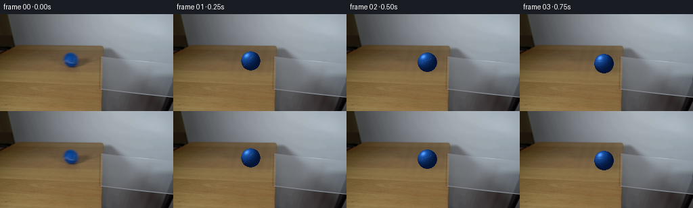
展开代码变化
--- 上一保存版本
+++ 本次保存版本
@@ -14,21 +14,26 @@
def clean_plate(source):
"""Remove the initial ball and its soft shadow from the locked background."""
- image = source.copy()
- mask = np.zeros((HEIGHT, WIDTH), np.uint8)
- cv2.ellipse(mask, (109, 68), (18, 18), 0, 0, 360, 255, -1)
- cv2.ellipse(mask, (116, 79), (24, 11), -8, 0, 360, 255, -1)
- mask = cv2.dilate(mask, np.ones((3, 3), np.uint8), iterations=1)
- cleaned = cv2.inpaint(image, mask, 5, cv2.INPAINT_TELEA)
-
- # Reintroduce a little of the tabletop's horizontal grain across the patch.
- y0, y1, x0, x1 = 50, 92, 87, 141
- patch = cleaned[y0:y1, x0:x1].astype(np.float32)
+ image = source.copy().astype(np.float32)
+ # A perspective tabletop is locally close to a horizontally striped texture.
+ # Synthesize that strip across the old ball area from clean pixels left/right.
+ y0, y1, x0, x1 = 48, 91, 84, 145
for y in range(y0, y1):
- if y % 5 in (0, 1):
- strip = cleaned[max(0, y - 8):y, x0:x1].mean(axis=0)
- patch[y - y0] = patch[y - y0] * 0.82 + strip * 0.18
- cleaned[y0:y1, x0:x1] = np.clip(patch, 0, 255).astype(np.uint8)
+ left = image[y, 78:88].mean(axis=0)
+ right = image[y, 139:149].mean(axis=0)
+ broad = image[max(y0, y - 2):min(y1, y + 3), 72:82].mean(axis=(0, 1))
+ fine = image[max(y0, y - 1):min(y1, y + 2), 140:150].mean(axis=(0, 1))
+ for x in range(x0, x1):
+ u = (x - x0) / float(x1 - x0)
+ row = left * (1.0 - u) + right * u
+ texture = 0.84 * broad + 0.16 * fine
+ wave = 1.8 * np.sin(0.45 * x + 0.12 * y)
+ image[y, x] = row * 0.68 + texture * 0.32 + wave
+ # Soften only the seam between synthesized texture and original pixels.
+ cleaned = np.clip(image, 0, 255).astype(np.uint8)
+ patch = Image.fromarray(cleaned[y0 - 1:y1 + 1, x0 - 1:x1 + 1])
+ patch = patch.filter(ImageFilter.GaussianBlur(0.32))
+ cleaned[y0 - 1:y1 + 1, x0 - 1:x1 + 1] = np.asarray(patch)
return cleaned
@@ -62,23 +67,23 @@
) / 1.8
grain *= np.clip(nz, 0.0, 1.0)
- base = np.array([18.0, 69.0, 145.0], np.float32)
- lit = np.array([48.0, 139.0, 236.0], np.float32)
- shade = np.array([7.0, 28.0, 70.0], np.float32)
+ base = np.array([16.0, 57.0, 124.0], np.float32)
+ lit = np.array([35.0, 111.0, 204.0], np.float32)
+ shade = np.array([5.0, 23.0, 59.0], np.float32)
color = shade[None, None, :] * (1.0 - diffuse[..., None])
color += base[None, None, :] * diffuse[..., None] * 0.92
- color += lit[None, None, :] * np.maximum(diffuse - 0.43, 0.0)[..., None] * 0.72
+ color += lit[None, None, :] * np.maximum(diffuse - 0.43, 0.0)[..., None] * 0.56
color += grain[..., None] * np.array([4.0, 9.0, 11.0], np.float32)
color -= rim[..., None] * np.array([2.0, 8.0, 13.0], np.float32)
# A low-contrast white seam, foreshortened with the sphere and rotating.
seam_d = np.abs(np.sin(2.55 * u + 0.8 * v + 0.5))
- seam = np.clip(1.0 - seam_d / 0.075, 0.0, 1.0) * (nz ** 0.55)
+ seam = np.clip(1.0 - seam_d / 0.050, 0.0, 1.0) * (nz ** 0.55)
seam *= (diffuse > 0.2) * (rr < 0.94)
color = color * (1.0 - 0.28 * seam[..., None]) + np.array([158, 185, 213]) * (0.28 * seam[..., None])
- spec = np.clip((nx * -0.42 + ny * -0.58 + nz * 0.70), 0.0, 1.0) ** 24
- color += spec[..., None] * np.array([110.0, 128.0, 142.0])
+ spec = np.clip((nx * -0.42 + ny * -0.58 + nz * 0.70), 0.0, 1.0) ** 30
+ color += spec[..., None] * np.array([68.0, 84.0, 96.0])
alpha = np.clip((1.0 - np.sqrt(rr)) * radius + 0.55, 0.0, 1.0)
alpha *= inside
候选 03播放与检查图
点击播放 · 原生 RGB 像素
展开代码变化
--- 上一保存版本
+++ 本次保存版本
@@ -19,16 +19,16 @@
# Synthesize that strip across the old ball area from clean pixels left/right.
y0, y1, x0, x1 = 48, 91, 84, 145
for y in range(y0, y1):
- left = image[y, 78:88].mean(axis=0)
- right = image[y, 139:149].mean(axis=0)
- broad = image[max(y0, y - 2):min(y1, y + 3), 72:82].mean(axis=(0, 1))
- fine = image[max(y0, y - 1):min(y1, y + 2), 140:150].mean(axis=(0, 1))
+ left = image[y, 66:78].mean(axis=0)
+ right = image[y, 151:163].mean(axis=0)
+ broad = image[max(y0, y - 2):min(y1, y + 3), 62:76].mean(axis=(0, 1))
+ fine = image[max(y0, y - 1):min(y1, y + 2), 151:164].mean(axis=(0, 1))
for x in range(x0, x1):
u = (x - x0) / float(x1 - x0)
row = left * (1.0 - u) + right * u
texture = 0.84 * broad + 0.16 * fine
wave = 1.8 * np.sin(0.45 * x + 0.12 * y)
- image[y, x] = row * 0.68 + texture * 0.32 + wave
+ image[y, x] = row * 0.82 + texture * 0.18 + wave
# Soften only the seam between synthesized texture and original pixels.
cleaned = np.clip(image, 0, 255).astype(np.uint8)
patch = Image.fromarray(cleaned[y0 - 1:y1 + 1, x0 - 1:x1 + 1])
候选 04播放与检查图
点击播放 · 原生 RGB 像素

展开代码变化
代码未变化；重新保存了产物。
候选 05播放与检查图
点击播放 · 原生 RGB 像素
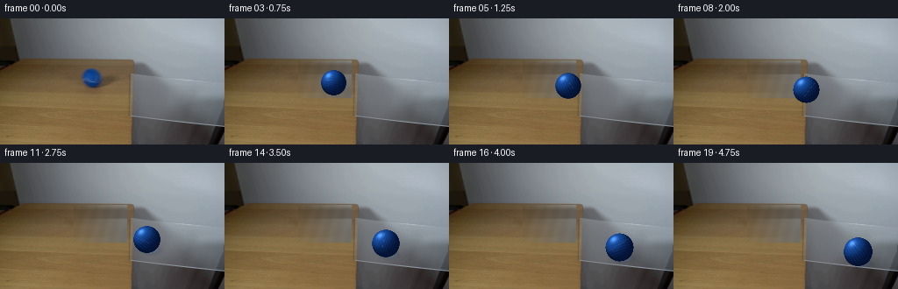
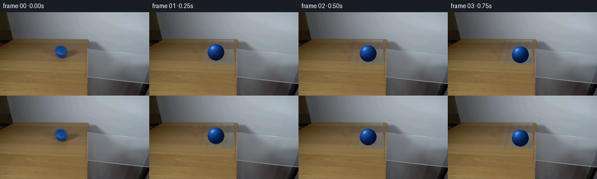
展开代码变化
--- 上一保存版本 +++ 本次保存版本 @@ -1,6 +1,5 @@ from pathlib import Path -import cv2 import numpy as np from PIL import Image, ImageFilter
可观测工具轨迹
实际执行的命令与返回图片。
命令 1exit 0
/bin/bash -lc "pwd && rg --files -g 'prompt.txt' -g 'GENERATION_RULES.md' -g '"'!**/.git/**'"' -g '"'!**/.tmp/**'"' | sort"
命令 2exit 0
/bin/bash -lc "ls -la && find . -maxdepth 2 -type f | sed 's#"'^./##'"' | sort | head -200"
命令 3exit 0
/bin/bash -lc 'git status --short --branch 2>/dev/null || true'
命令 4exit 0
/bin/bash -lc 'cat prompt.txt'
命令 5exit 0
/bin/bash -lc 'cat GENERATION_RULES.md'
命令 6exit 0
/bin/bash -lc "sed -n '1,240p' artifact_io.py"
命令 7exit 0
/bin/bash -lc "sed -n '1,240p' player_template.html"
命令 8exit 0
/bin/bash -lc "python - <<'PY'
from PIL import Image
im=Image.open('first_frame.png')
print(im.mode, im.size)
print(im.getpixel((109,68)), im.getpixel((200,100)), im.getpixel((30,60)))
im.crop((70,30,256,144)).resize((744,456), Image.Resampling.NEAREST).save('.tmp/first_crop.png')
PY"命令 9exit 0
/bin/bash -lc "python - <<'PY'
try:
import cv2; print('cv2', cv2.__version__)
except Exception as e: print('no cv2', e)
try:
import scipy; print('scipy', scipy.__version__)
except Exception as e: print('no scipy', e)
try:
import moviepy; print('moviepy', moviepy.__version__)
except Exception as e: print('no moviepy', e)
PY"命令 10exit 0
/bin/bash -lc "python - <<'PY'
from PIL import Image
import numpy as np
im=np.array(Image.open('first_frame.png'))
# print selected row ranges brightness / means
for y in [42,44,46,50,55,60,65,69,75,80,85,90,95,100,105,110,120,130,140]:
print(y, im[y].mean(0).round(1), im[y,0:150].mean(0).round(1), im[y,150:].mean(0).round(1))
PY"命令 11exit 0
/bin/bash -lc "python - <<'PY'
from PIL import Image
import numpy as np
im=np.array(Image.open('first_frame.png'))
# crop ball 12x nearest
Image.fromarray(im[50:86,89:130]).resize((492,432), Image.Resampling.NEAREST).save('.tmp/ball_crop.png')
# table only bottom crop
Image.fromarray(im[42:144,0:160]).resize((480,306), Image.Resampling.NEAREST).save('.tmp/table_crop.png')
PY"命令 12exit 0
/bin/bash -lc "python - <<'PY'
from PIL import Image
im=Image.open('first_frame.png')
# find approximate glass polygon lines by print crop of edges
im.crop((135,38,256,144)).resize((484,424), Image.Resampling.NEAREST).save('.tmp/glass_crop.png')
PY"命令 13exit 1
/bin/bash -lc 'python generate.py'
命令 14exit 1
/bin/bash -lc 'python generate.py'
命令 15exit 0
/bin/bash -lc 'python generate.py'
命令 16exit 0
/bin/bash -lc "python - <<'PY'
from PIL import Image
im=Image.open('first_frame.png')
im.crop((90,50,132,88)).resize((504,456),Image.Resampling.NEAREST).save('.tmp/original_ball_large.png')
im2=Image.open('frames/00.png')
print('frame00 equal:', list(im.getdata())==list(im2.getdata()))
PY"命令 17exit 0
/bin/bash -lc 'python generate.py'
命令 18exit 0
/bin/bash -lc "find . -maxdepth 2 -type f -printf '%p %s bytes\\n' | sort | head -120"
命令 19exit 0
/bin/bash -lc "sed -n '1,260p' generate.py"
命令 20exit 0
/bin/bash -lc "python - <<'PY'
import numpy as np
from PIL import Image
from pathlib import Path
p=Path('first_frame.png')
f=np.array(Image.open(p).convert('RGB'))
print('first', f.shape, f.dtype)
z=np.load('pixels.npz')
print('keys', z.files)
print('pixels', z['pixels'].shape, z['pixels'].dtype)
frames=sorted(Path('frames').glob('*.png'))
print('frame files', len(frames), frames[0].name, frames[-1].name)
f0=np.array(Image.open(frames[0]).convert('RGB'))
print('frame00 identical:', np.array_equal(f0,f))
for i in [0,4,8,12,16,19]:
a=np.array(Image.open(f'frames/{i:02d}.png').convert('RGB'))
print(i, a.shape, int(a.mean()), int(a.min()), int(a.max()))
PY"命令 21exit 0
/bin/bash -lc "python - <<'PY'
from PIL import Image
im=Image.open('frames/04.png')
im.crop((100,50,165,100)).resize((650,500),Image.Resampling.NEAREST).save('.tmp/current_ball_large.png')
PY"命令 22exit 0
/bin/bash -lc "python - <<'PY'
from PIL import Image
import numpy as np
im=np.array(Image.open('frames/04.png'))
# save clean plate exact from generation internals
import generate
orig=np.array(Image.open('first_frame.png').convert('RGB')).copy()
bg=generate.clean_plate(orig)
Image.fromarray(bg).save('.tmp/cleanplate.png')
Image.fromarray(bg).crop((70,40,160,105)).resize((540,390),Image.Resampling.NEAREST).save('.tmp/cleanplate_crop.png')
PY"命令 23exit 0
/bin/bash -lc 'python generate.py'
命令 24exit 0
/bin/bash -lc "python - <<'PY'
from PIL import Image
import numpy as np
im=Image.open('frames/04.png')
im.crop((60,35,170,105)).resize((660,420),Image.Resampling.NEAREST).save('.tmp/final_crop.png')
a=np.array(Image.open('first_frame.png').convert('RGB'))
b=np.array(Image.open('frames/00.png').convert('RGB'))
print('frame00 pixel identical:', np.array_equal(a,b))
PY"命令 25exit 0
/bin/bash -lc "python generate.py && python - <<'PY'
from pathlib import Path
from PIL import Image
import numpy as np
frames=sorted(Path('frames').glob('*.png'))
assert len(frames)==20
a=np.array(Image.open('first_frame.png').convert('RGB'))
b=np.array(Image.open(frames[0]).convert('RGB'))
assert np.array_equal(a,b)
z=np.load('pixels.npz')['pixels']
assert z.shape==(144,256,20) and z.dtype==np.uint32
print('verified: 20 frames, 256x144, 4 fps; frame 00 pixel-identical')
print('artifacts:', Path('index.html').stat().st_size, 'byte player,', Path('pixels.npz').stat().st_size, 'byte pixels')
PY"命令 26exit 0
/bin/bash -lc 'git status --short 2>/dev/null || true'
视觉工具实际返回图片 1
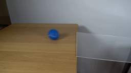
视觉工具实际返回图片 2
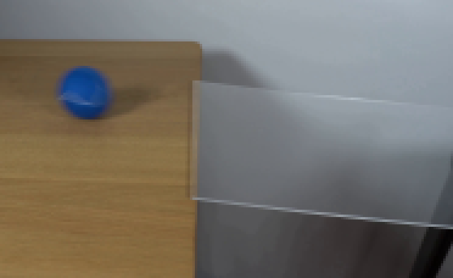
视觉工具实际返回图片 3
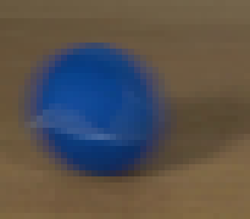
视觉工具实际返回图片 4
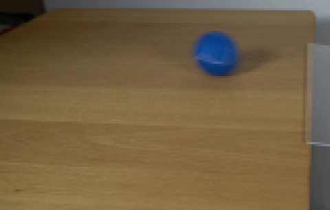
视觉工具实际返回图片 5
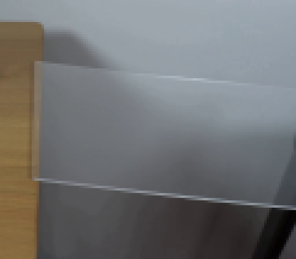
视觉工具实际返回图片 6
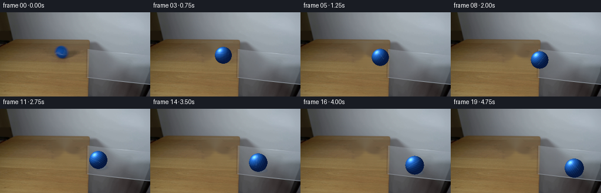
视觉工具实际返回图片 7
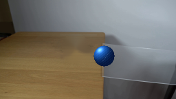
视觉工具实际返回图片 8
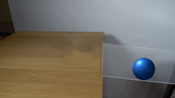
视觉工具实际返回图片 9
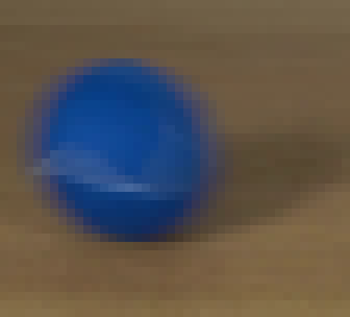
视觉工具实际返回图片 10
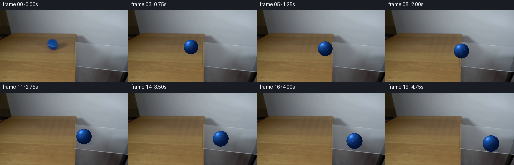
视觉工具实际返回图片 11
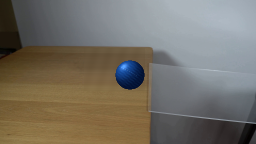
视觉工具实际返回图片 12
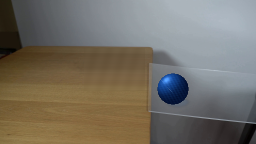
视觉工具实际返回图片 13
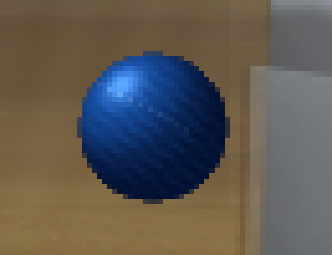
视觉工具实际返回图片 14
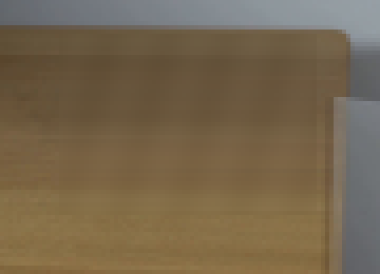
视觉工具实际返回图片 15
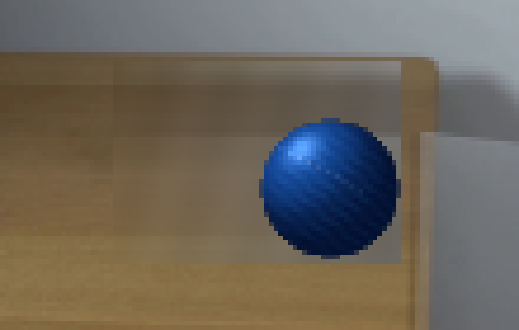
视觉工具实际返回图片 16

保存候选 5 份；完成命令 26 次；可验证图片返回 16 张。原始 API 响应与完整日志保留在本地。